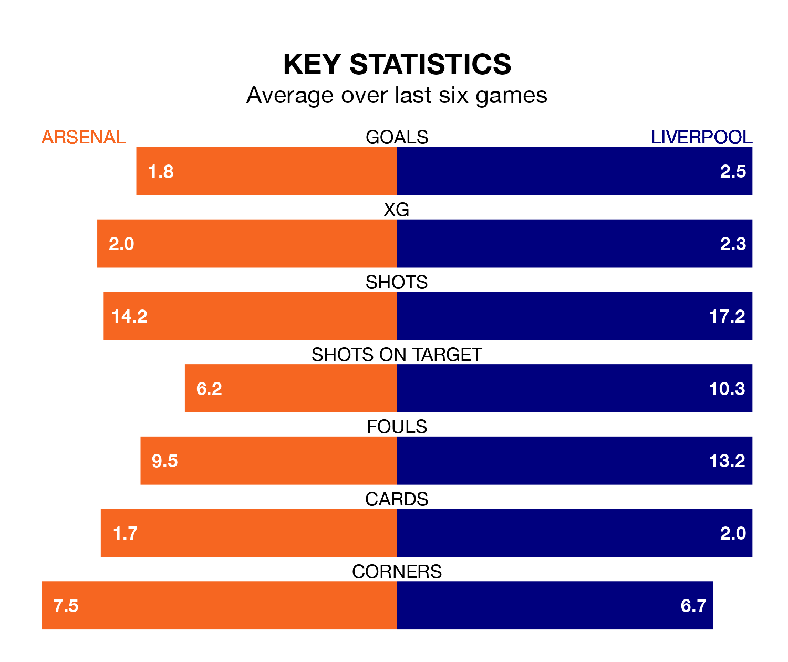

Two of the Premier League's top sides face each other at the Emirates Stadium in Sunday's kick-off, when third-placed Arsenal host table-topping Liverpool.
Arsenal have picked up 14 wins and four draws from 22 games so far this season, and sit five points below the visitors going into the 4.30pm match.
The Reds, meanwhile, have won 15 and drawn six, picking up 51 points.
With 51 goals in 22 games so far this season, Liverpool are the league's joint-highest scorers with 2.3 goals per game. And they are conceding fewer than average, letting in 19 goals at a rate of 0.9 per game.
Arsenal are also above average scorers, with 2.0 goals per game, compared to a league average of 1.6. They have conceded 1.0 goal per game.
In Mohamed Salah, the Reds have the league's sharpest shooter so far this season. He has notched 14 goals in 20 appearances.
His goal rate of one every 125 minutes is much quicker than that of Bukayo Saka, the Gunners's top scorer with a goal every 264 minutes, and a total of seven goals in 21 games.
In the last 10 years, Arsenal and Liverpool have played each other on 27 occasions. Arsenal won four of them, Liverpool 12, and they drew 11 times.
On average, the Gunners scored 1.4 goals and the Reds 2.3 in those matches.
Their last meeting was on January 7, when Liverpool won 2-0 away.
The home side are in mixed form in the Premier League, with three wins and a draw from their last six games.
With four wins and two draws over that period, the visitors' form is better – they have taken 14 points from 18, compared to Arsenal's 10.
Arsenal's last match was on Tuesday, a 2-1 win against Nottingham Forest, with Gabriel Jesus and Saka getting the goals for the Gunners.
Liverpool beat Chelsea 4-1 last time out, on Wednesday, with Conor Bradley, Diogo Jota, Dominik Szoboszlai and Luis Díaz on the scoresheet.
Sunday's match will be refereed by Anthony Taylor, who has taken charge of 16 Premier League games so far this season, issuing two red cards and booking 82 players. He has awarded 10 penalties.
The last Arsenal game Taylor refereed was a 3-1 home win against Manchester United on September 3. His last Liverpool match was their 4-2 win at home against Newcastle United on January 1.
Updated: 15:45 (UTC), 02/02/24